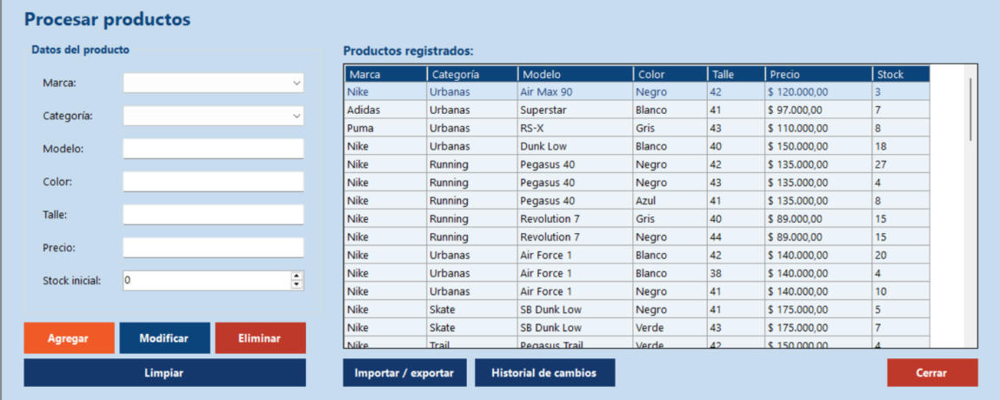

Inicio › Maestro › Procesar productos
Procesar productos
Es el catálogo del negocio: cada fila es una zapatilla distinta (marca, modelo, color y talle) con su precio y su stock. Los campos de la izquierda sirven para dos cosas: cargar un producto nuevo y buscar mientras escribís.
Dónde está: Maestro › Procesar productosLo usa: AdministradorAtajo: F1
Pasá el mouse por encima de cualquier botón o campo de la pantalla para ver qué hace.

Qué hace cada elemento
- 1MarcaElegí la marca de la lista. Las marcas se cargan en Procesar categorías y marcas.
- 2CategoríaElegí el tipo de calzado (Running, Urbanas, Skate...). También se carga en Procesar categorías y marcas.
- 3ModeloNombre del modelo, por ejemplo Air Force 1. Admite letras, números, espacios y los signos . & ' - / + ( ). Hasta 50 caracteres.
- 4ColorSolo letras. Para combinados usá espacio, guion o barra (Blanco/Negro). Hasta 30 caracteres.
- 5TalleNúmero entre 30 y 50. Admite medio talle con punto o coma (42.5).
- 6PrecioPrecio de venta por par, mayor a cero y con hasta 2 decimales. Máximo 99.999.999,99.
- 7Stock inicial / Stock actualAl cargar un producto nuevo, la etiqueta dice Stock inicial: es con cuántos pares empieza. Cuando elegís un producto de la lista pasa a decir Stock actual y se puede corregir.
- 8Productos registradosTodo el catálogo con marca, categoría, modelo, color, talle, precio y stock. Tocá una fila para cargarla en el formulario y poder modificarla o eliminarla.
- 9AgregarRegistra un producto nuevo con los datos del formulario.
- 10ModificarGuarda los cambios del producto que elegiste en la lista (datos, precio o stock).
- 11EliminarDa de baja el producto elegido, con confirmación. No se puede si ya tuvo movimientos.
- 12LimpiarVacía el formulario y deja de seleccionar el producto, para volver a cargar o buscar.
- 13Importar / exportarAbre la pantalla para cargar productos desde un archivo XML o para guardar el catálogo en un XML.
- 14Historial de cambiosAbre el historial de cada modificación hecha a los productos, con la posibilidad de volver a una versión anterior.
- 15CerrarCierra esta pantalla y vuelve al menú principal.
Cómo hacerlo
- Con el formulario vacío (tocá Limpiar si hay un producto elegido), completá Marca, Categoría, Modelo, Color, Talle y Precio.
- Indicá el Stock inicial: con cuántos pares empieza.
- Tocá Agregar. Aparece "Producto registrado correctamente".
Tené en cuenta: No puede haber dos productos con la misma marca, modelo, color y talle. Si ya existe, elegilo en la lista y corregí su stock con Modificar.
No hay botón de buscar: la lista se filtra sola a medida que completás los campos.
- Con el formulario vacío, elegí una marca o categoría, o escribí parte del modelo, color, talle o precio.
- La lista muestra solo lo que coincide. El modelo y el color no distinguen mayúsculas ni tildes; el talle y el precio buscan por el comienzo (42 muestra 42 y 42.5).
- Tocá Limpiar para ver todo de nuevo.
- Tocá el producto en la lista.
- Modificá lo que necesites. La etiqueta ahora dice Stock actual.
- Tocá Modificar.
Tené en cuenta: Cada modificación queda guardada en el Historial de cambios, así podés ver qué se cambió y volver atrás si hizo falta.
- Tocá el producto en la lista.
- Tocá Eliminar y confirmá.
Tené en cuenta: Solo se pueden eliminar productos sin movimientos. Si ya estuvo en un carrito, una venta o una compra, no se puede borrar.
Para saber más
Mensajes que puede mostrar el sistema 14
| Mensaje | Qué significa y qué hacer |
|---|---|
| AvisoComplete los campos obligatorios (marca, categoría, modelo, color, talle y precio). | Falta alguno de esos datos. |
| AvisoHay un producto elegido en la grilla. Presione Limpiar antes de agregar uno nuevo. | Para cargar otro producto primero tocá Limpiar. |
| AvisoSeleccione un producto de la grilla para modificar / eliminar. | Elegí la fila del producto antes. |
| AvisoEl modelo solo admite letras, números, espacios y los signos . & ' - / + ( ) (máximo 50 caracteres) | Corregí el modelo. |
| AvisoEl color solo admite letras, y puede combinarse con espacio, guion o barra (máximo 30 caracteres) | Sin números en el color. |
| AvisoEl talle debe ser un número entre 30 y 50, con medio talle opcional (por ejemplo 42 o 42.5) | Revisá el talle. |
| AvisoEl precio debe ser mayor a cero, con hasta 2 decimales, y no puede superar 99.999.999,99 | Corregí el precio. |
| AvisoEl stock debe ser un número entero mayor o igual a cero | No se admiten stocks negativos. |
| AvisoYa existe un producto con esa marca, modelo, color y talle. Para cambiar su stock, elíjalo en la grilla y use Modificar | No se duplican productos: modificá el que ya está. |
| AvisoEl producto ya no existe. Actualice la lista y vuelva a intentar | Alguien lo eliminó. Tocá Limpiar o volvé a abrir la pantalla. |
| Confirmación¿Confirma la eliminación del producto ...? | Sí lo da de baja, No cancela. |
| AvisoNo se puede eliminar el producto: tiene movimientos asociados (carritos, ventas o compras) | Se conserva para no romper el historial. |
| ListoProducto registrado / modificado / eliminado correctamente | La operación se guardó. |
| ErrorOcurrió un error inesperado. El detalle quedó registrado en la bitácora | Avisale al administrador. |
Reglas a tener en cuenta 5
- Solo el Administrador puede usar esta pantalla.
- Un producto se identifica por marca + modelo + color + talle: no puede repetirse esa combinación.
- El stock también cambia solo con las compras recibidas (suma) y las ventas cobradas (resta), no solo desde acá.
- Cuando el stock de un producto baja a 5 unidades o menos, aparece en el aviso de reposición del reporte Estado de stock.
- Cada alta, modificación y baja queda en la Bitácora y en el Historial de cambios de productos.
Temas relacionados
SneakRush · Ayuda del sistema · Procesar productos. Podés abrir esta ayuda desde cualquier pantalla con la tecla F1.